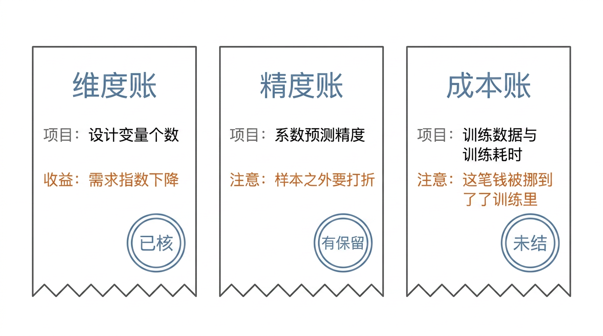
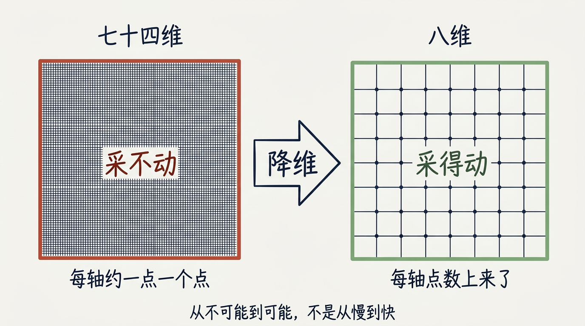
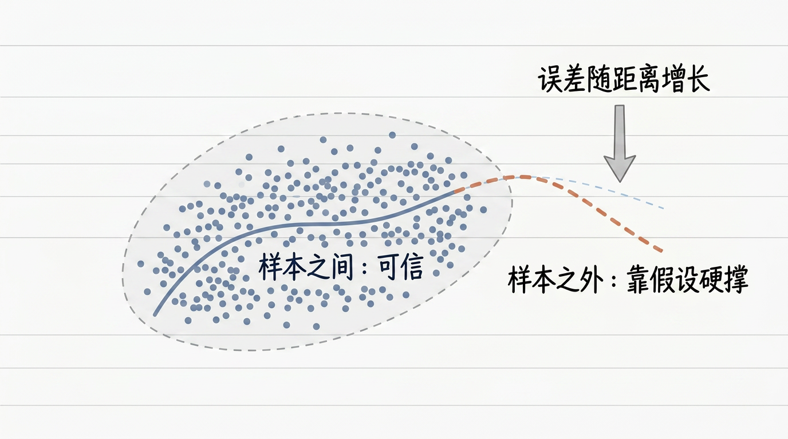
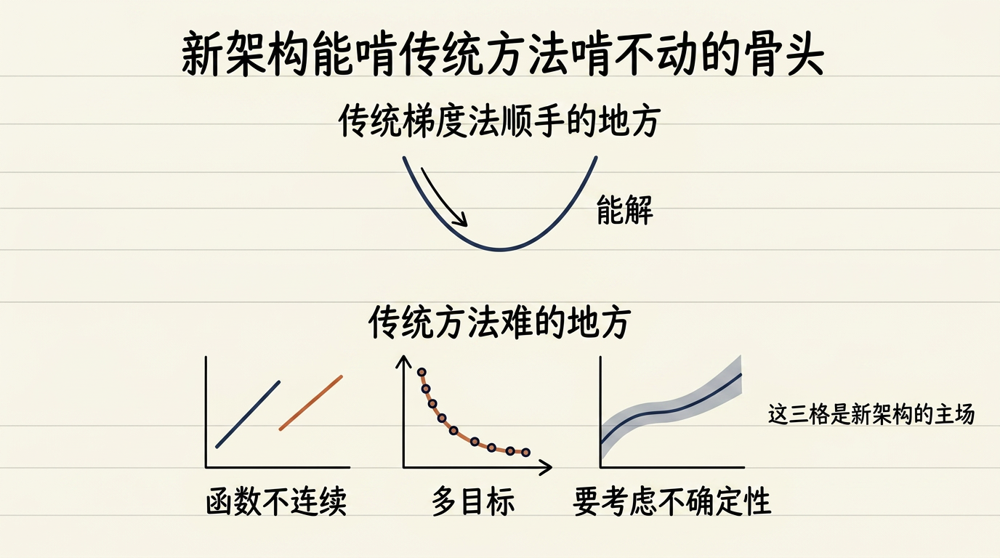
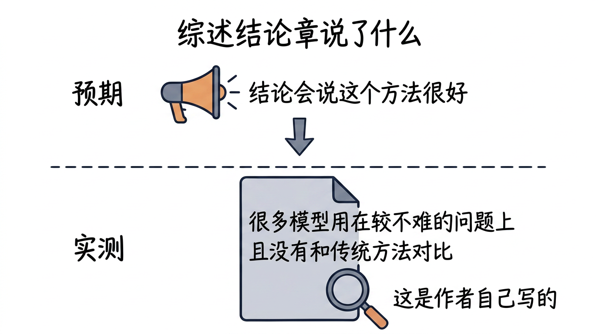
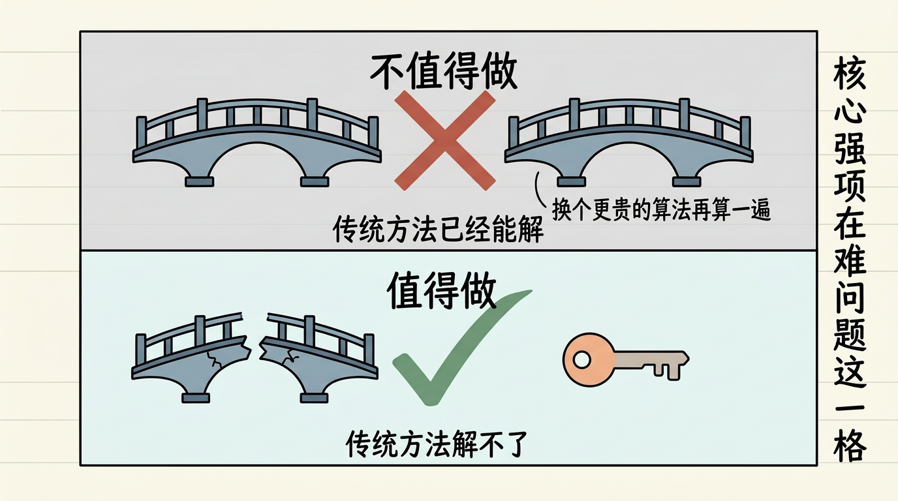
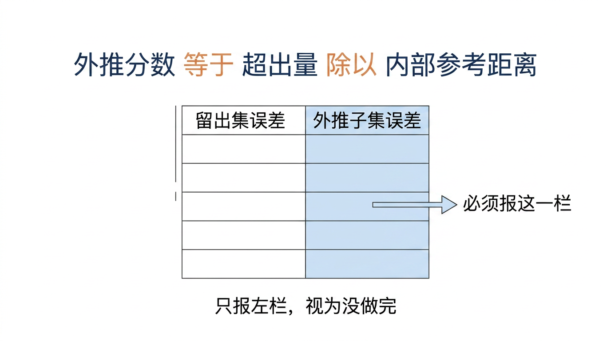
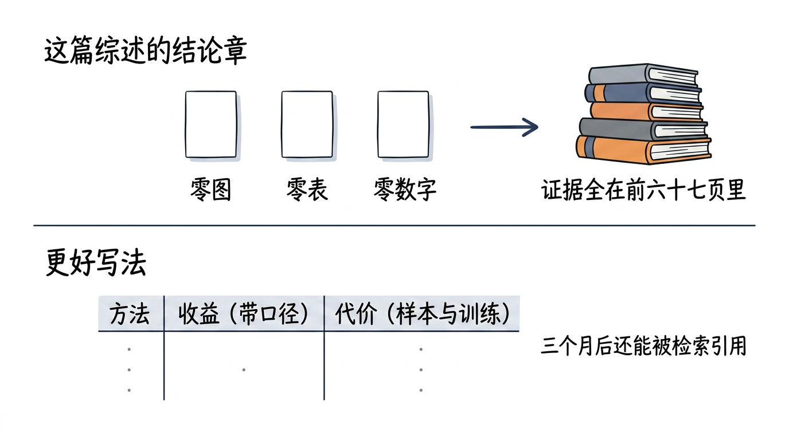
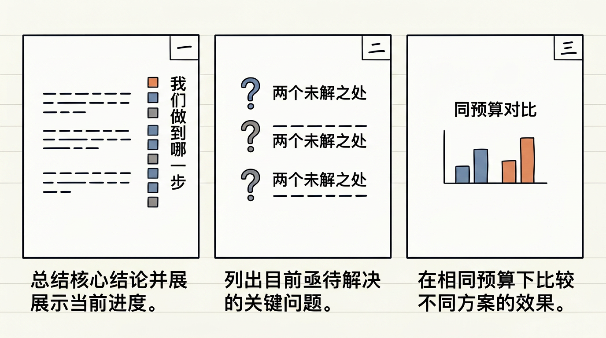
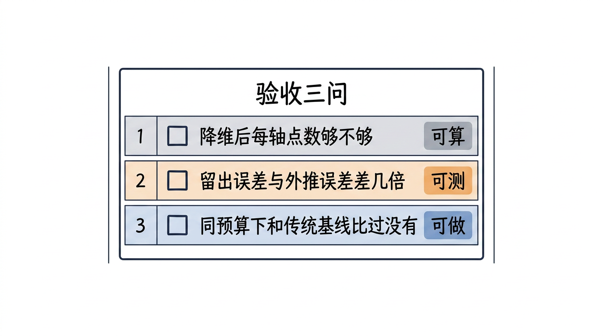

逐张看文字是否清晰不糊、中文是否有错字、结构是否与正文一致。发现问题的图，把 文件名 报给我，我单独重画。
（自检脚本无视觉能力，本页只能由人眼完成。）
| # | 图 | 位置 / 应表达的意思 |
|---|---|---|
| 1 |  | §3 引子 三张收据：维度账已核 / 精度账有保留 / 成本账未结 L10v2_s2_three_receipts_zh.png |
| 2 |  | §4(a) 结论① 74 维采不动 → 8 维才谈得上采样 L10v2_s3_claim1_dim_zh.png |
| 3 |  | §4(a) 结论② 样本之间可信，样本之外靠假设硬撑 L10v2_s3_claim2_interp_zh.png |
| 4 |  | §4(a) 结论③ 不连续 / 多目标 / 带不确定性才是新架构主场 L10v2_s3_claim3_arch_zh.png |
| 5 |  | §4(b) 打脸 预期：结论会说方法很好；实测：作者自批（两词必须在图上） L10v2_s3_self_criticism_zh.png |
| 6 |  | §4(c) 核心强项在传统方法解不了的那一格 L10v2_s3_core_strength_zh.png |
| 7 |  | §5 外推分数 + 留出集/外推子集两栏都必须报 L10v2_s4_extrapolation_score_zh.png |
| 8 |  | §7 结论章零图零表 vs 方法/收益/代价三列总表 L10v2_s5_no_figures_zh.png |
| 9 |  | §6 操作流 组会三页：结论+进度 / 两个未解 / 同预算对比 L10v2_s6_ppt_three_pages_zh.png |
| 10 |  | §10 你的项目 验收三问：可算 / 可测 / 可做 L10v2_s8_acceptance_checklist_zh.png |